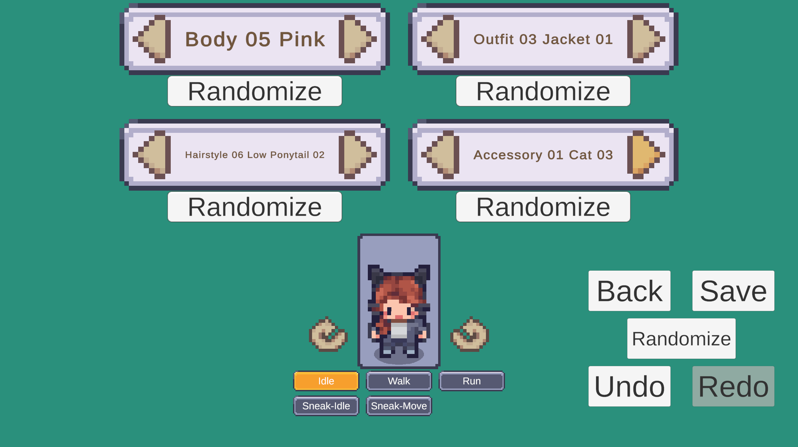
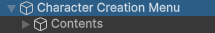

Character Creator Setup
This page will guide you through the process of implementing your own Character Creation Menu into your game.
The Character Creation Menu Manager
The CharacterCreationMenuManager is the beating heart of the menu.
It lives outside the contents of the menu and should be enabled at all times.
It requires two things.
- Default Character Type - The character type used when enabling the menu. Can be overridden.
- Menu Contents - Parent game object of the actual Character Creation Menu contents.
How to Enable the Menu
The Character Creation Menu Manager provides 4 methods to open the menu.
Most methods use the Character Grouping System.
Learn more about the Character Grouping System here.
| Method | Descripion |
|---|---|
| EnableMenu_PrimaryCharacterSlot | Opens the menu using the Primary Character Slot in the Character Type Used. |
| EnableMenu_EditCharacter | Open the menu to edit a layered character that already exists. |
| EnableMenu_NewPrimaryCharacterSlot | Opens the menu with a new character that overrides the Primary Character slot. |
| EnableMenu_NewCharacterInFlexibleGroup | Opens the menu with a new character & puts it inside the provided Flexible Group when saved. |
Character Creation Menu Events
Two Unity Events are exposted in the Character Creation Menu Manager component.
- On Character Saved
- Called when the character in the Character Creation Menu is saved.
- Provides the charater that was saved as an argument.
- For example you can hook up to this event, when it's invoked call
CharacterCreationMenuManager.DisableMenuto disable and close the menu.
- On Menu Disabled
- Called after the Character Creation Menu is disabled and closed. You can hook up to this event and when invoked open any other menu you'd like using your own menu system.
Premade Character Creation Menus
The easiest solution is to use a premade character creation menu. These prefabs contain everything needed for a functional Character Creation Menu. At bare minimum they contain the following:
| Content | Descripion |
|---|---|
| Layer Selectors | Used to change layers of the character. |
| Character preview | Used to preview the character while editing. |
| Loading Screen | Displayed over the Character Creation Menu while it's loading. |
| Save & Back Buttons | Used to save character changes or close the menu without saving. |
Tip
Premade Character Creation Menu prefabs location: Prefabs > Character Creator > Premade Menus
Premade Menus:
- Simplistic:
- Dropdown Selectors [Initialize Existing]. - Includes 6 dropdown selectors.
- Character Preview - Includes rotation controls.
- Loading Screen - Includes progress bar and text.
- Save & Back Buttons.
- 
Creating Your Own Character Creation Menu
You'll need two game objects.
- #1 holds the
Character Creation Menu Managercomponent and will manage the menu. SHOULD be enabled at runtime. - #2 Holds the actual contents of the menu and is referenced in the
Menu Contentsfield in theCharacter Creation Menu Manager. Doesn't matter if it's enabled or disabled.

Character Creation Menu Contents
Use this section as a checklist for everything that can be added to the Character Creation Menu.
Starting with the essentials and then bonus features.
All parts of the menu are contained as prefabs. These prefabs can be placed anywhere in the character creation menu contents parent.
Most do not require any manual references and can be added without any extra setup.
Essentials
- Layer Selectors
- Lets the player change selected options for each layer of the character.
- Prefabs Location: Prefabs > Character Creator > Layer Selectors. Choose any folder within there.
- Within your chosen Layer Selector folder use a prefab within the
/Pre-Setupsubfolder which contains a set of already setup Layer Selectors. - Learn more about Layer Selectors here.
- Character Preview
- A character preview lets the player see a live version of the character they're creating.
- Prefabs Location: Prefabs > Character Creator > Character Preview.
- Base folder contains the core character preview prefab which can be added to the menu as is.
- Additional functionality can be added through addon prefabs.
- Learn more about character previews and addon prefabs here.
- Menu Controls
- The two core controls you need are Back and Save Character buttons
- These can easily be setup without prefabs. Simply add a
buttonandCCMRelaycomponent to a game object. - Set the On Click Event of the button to run CCMRelay.DisableMenu() or CCMRelay.SaveCharacter().
- Prefabs also exist under Prefabs > Character Creator > Menu Controls.
- Additional controls can also be setup. Learn more about Menu Controls here.
- Loading Screen
- A loading screen hides the menu while it's being setup.
- Prefabs Location: Prefabs > Character Creator > Loading Screen
- In the base folder contains the Loading Screen Core which only contains a black screen.
- Additional addon prefabs are located in the
/Loading Screen Componentssubfolder. - Addon prefabs can be added as children of the Loading Screen Core and require a reference to the Loading Screen Handler located in the Loading Screen Core.
- Pre-setup feature complete loading screen prefabs are located in the
/Complete Loading Screenssubfolder. - Complete loading screens include additional features such as a loading bar/text.
- Learn more about setting up loading screens here.
Bonus Features
- Character Randomization
- A simple Randomize all layers button can be setup using a
buttonand theCCM Relay componentthe same way other Menu Controls are setup. - Controlled Randomization can be setup instead. This allows specific layers to be toggled off so only specific layers are randomized.
- Some Layer Selectors have variants that contain a randomize button to randomize that specific layer.
- Prefabs for both options are included at Prefabs > Character Creation > Randomization.
- Read more about character randomization setup here.
- A simple Randomize all layers button can be setup using a
- Character History
- The
CCM History Tackercomponent can be added to any game object in the Character Creation Menu contents. - The History Tracker will track all changes made to the character.
- History Prefabs are located under Prefabs > Character Creator > History.
- In the
/Undo-Redosubfolder are prefabs which include undo/redo buttons which when pressed can undo or redo changes made to the character. - In the
/History Panelssubfolder are prefabs which include lists that show all changes to the character. Clicking an entry in the list will revert the character. - Two History Panel prefabs exist.
- The first history panel is a vertical list and is text based. Each entry contains text describing what changed.
- The second history panel is a horizontal list and is sprite based. Every entry contains a preview of the character.
- Read more about the Character History System here.
- The
- Character Display Name Field
- A text input field can be added to let the player set a display name for their character.
- The display name can later be optionally displayed near the character.
- Prefabs Location: Prefabs > Character Creator > Character Display Name Field.